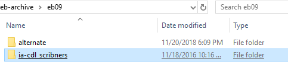
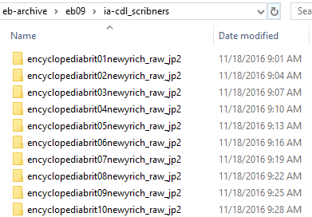
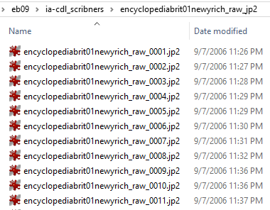
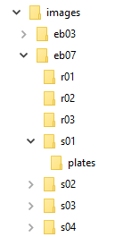
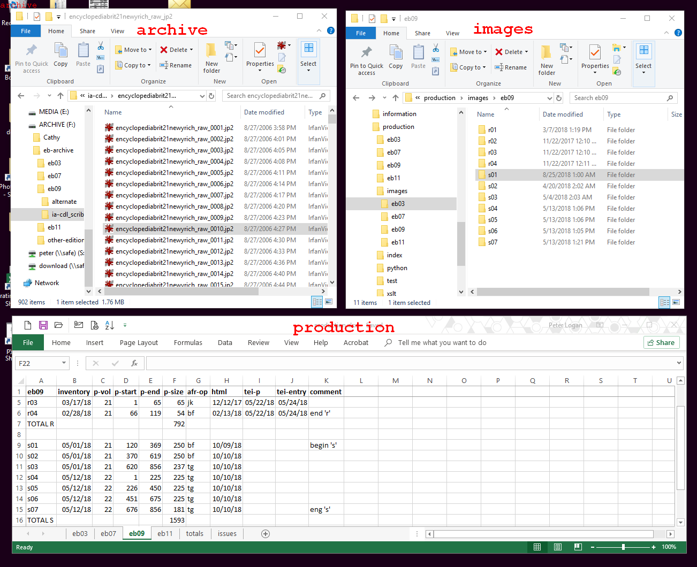

Copy and Paste the Image Files
Locate image files in the archive and move them to the production folder.
-
In the archive Repository, open the print edition folder for the needed edition. Each folder contains two subfolders:
alternate includes scans we are not actively using. The
other folder will have a name based on the online archive it was downloaded in
(see archive Repository).
Figure 1. Archive folder for eb09  -
Folders for the volumes of each edition are named differently, depending on
their original source. In the example below, the volume number is the two-digit
number in the middle of the folder name. Open the folder for the volume you
need.
Figure 2. Archive folder for eb09  -
You will see all of the original image files for the selected volume, beginning
with 8-15 pages of front matter. Files are numbered consecutively and do not
reflect actual page numbers. Locating the correct pages requires patience,
because volumes also include images of unnumbered plates and blank pages, so you
can get close with a little arithmetic, but you will have to hunt for the exact
page number.
Figure 3. Archive image files for eb09  -
Open a second file explorer window and navigate to
ebnn/_images.
- Create folders for the all of the new sections you plan to create (see Identify the Print Pages).
- Follow the guidelines for section folder names in Create an Image Collection. Create a plates subfolder in each page section folder.
Figure 4. _images folder  -
Organize your desktop so that you can see the archive
folder, the _images folder, and the
production spreadsheet at the same time.
Figure 5. Suggested windows arrangement.  -
Copy and paste the images.
- In the archive window, select the group of files included in the pages indicated in the production spreadsheet. Copy them using CTL+C.
- In the _images window, paste the files into the appropriate page section folder using CTL+P.
- Repeat this sequence until all files are copied and pasted into the _images folder.